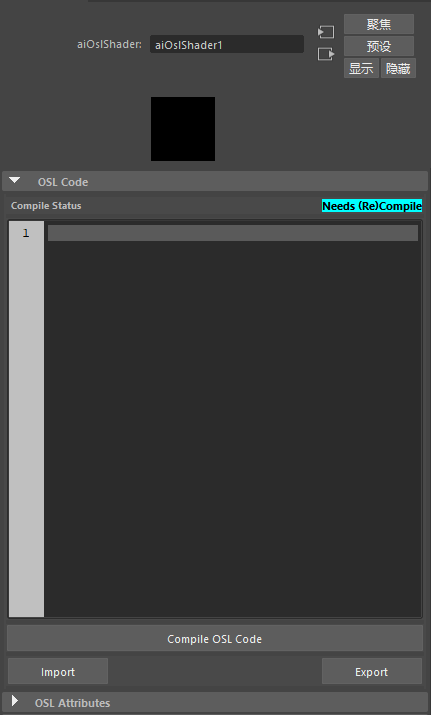
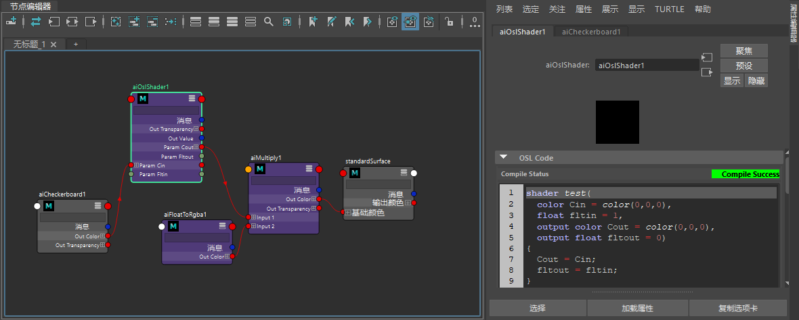

| 延伸阅读 |
|---|
| 有关完整的着色器文档，请参见《Arnold 用户手册》中的工具着色器。 |

可以使用开放式着色语言创建自己的着色器。通过 OSL 着色器，我们可以使用闭包实现从简单纹理图案到完整材质在内的任何东西。
| 有关示例 .osl 着色器和 .mtd 文件，请单击此处。 |
|---|
着色器输出可以链接到 .ass 文件中其他着色器节点的输入，也可以通过 AiNodeLinkOutput() 函数以编程方式链接到其他着色器节点的输入（方法是（可选）指定链接时所需的输出）。如果未指定输出，则将选择节点的默认输出参数，从而保留 Arnold 的现有行为。指定多个 OSL 着色器输出时，将应用标准 OSL 语言规则。具有三个颜色输出的示例 OSL 着色器可能类似于以下代码段，并且每个输出可以单独连接：
shader test_shader
(
output color result = color( 1 , 1 , 1 ),
output color good = color( 0 , 0 , 1 ),
output color bad = color( 1 , 0 , 0 )
)
{
}

使用多个着色器输出的 OSL 着色器